1. 这一部分加了什么
数量的来源一直是 MySQL 的 inventory 表。Redis 只做三种辅助：存一份数量让查询更快，存一把锁让同一个格子同一时刻只有一张单在减，存一条消息让入库之后的事情交给另一个线程去做。
| 接口或组件 | 做什么 | Redis 里的键 | 写到哪张表 |
|---|---|---|---|
GET /inventories?skuId=&locationId=（新） | 查一个格子上一种货的数量，先读缓存 | inv:货品主键:库位主键 | 只读 inventory |
POST /outbound-orders/{id}/lines（多一个请求头） | 带 Idempotency-Key，同一个键只加一行 | idem:outbound-line:键 | outbound_order_line |
POST /outbound-orders/{id}/complete（加锁） | 减库存前按格子加锁 | lock:inv:货品主键:库位主键 | inventory、outbound_order |
POST /inbound-orders/{id}/complete（发消息） | 每一行发一条入库完成消息 | Stream wms:inbound:completed | 同第一部分 |
InboundNoticeConsumer（新，定时） | 每秒读一次 Stream，每条消息写一行通知 | 消费组 notice，去重键 inbound:consumed:消息编号 | inbound_notice |
接口仍按同一条路走，中间多了一站 Redis：
取路径、参数、请求头
查、算、判断
键怎么拼
一条 Redis 命令
一条 SQL
下面每一处都给出真实代码，图里的行号就是文件里的行号。
2. 把 Redis 跑起来
Redis 和 MySQL 写在同一份 docker-compose.dev.yml 里。只起 Redis 一个服务：
docker compose -f docker-compose.dev.yml up -d redis docker exec -it pro-skill-redis redis-cli ping
PONG。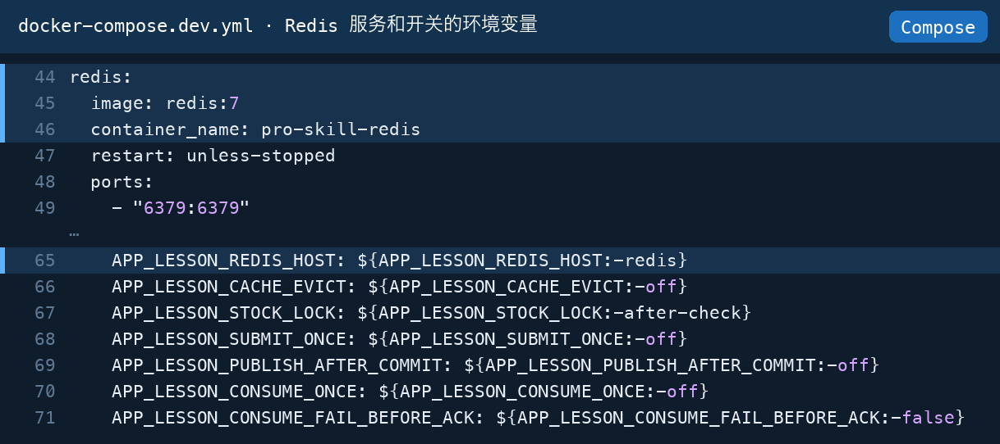
redis:7，容器名 pro-skill-redis，本机 6379 端口对到容器 6379。第 65–71 行是这一部分的开关，容器里跑应用时用环境变量改它们，第 4 节讲。应用在本机跑时连 localhost:6379，在 Compose 里跑时连服务名 redis:6379。主机名由 app.lesson.redis-host 决定，yaml 里是 localhost，Compose 里由 APP_LESSON_REDIS_HOST: redis 盖过。
看 Redis 里有什么，进 redis-cli 敲命令。这一部分会用到的：
| 命令 | 看什么 |
|---|---|
KEYS * | 现在有哪些键（课堂数据少才这样用） |
GET inv:1:1 | 货品 1 在库位 1 上缓存的数量。没有这个键回 (nil) |
GET idem:outbound-line:line-001、PTTL 同一个键 | 防重键记着哪张单，还剩多少毫秒过期 |
XRANGE wms:inbound:completed - + | Stream 里全部消息：编号和四个字段 |
XPENDING wms:inbound:completed notice | 投给了消费组、还没确认的有几条 |
FLUSHALL | 清空全部键，重做实验前用 |
Java 这边，Service 不直接拿 Redis 客户端，而是调 LessonRedis 这个接口。接口里一个方法对应一条 Redis 命令：
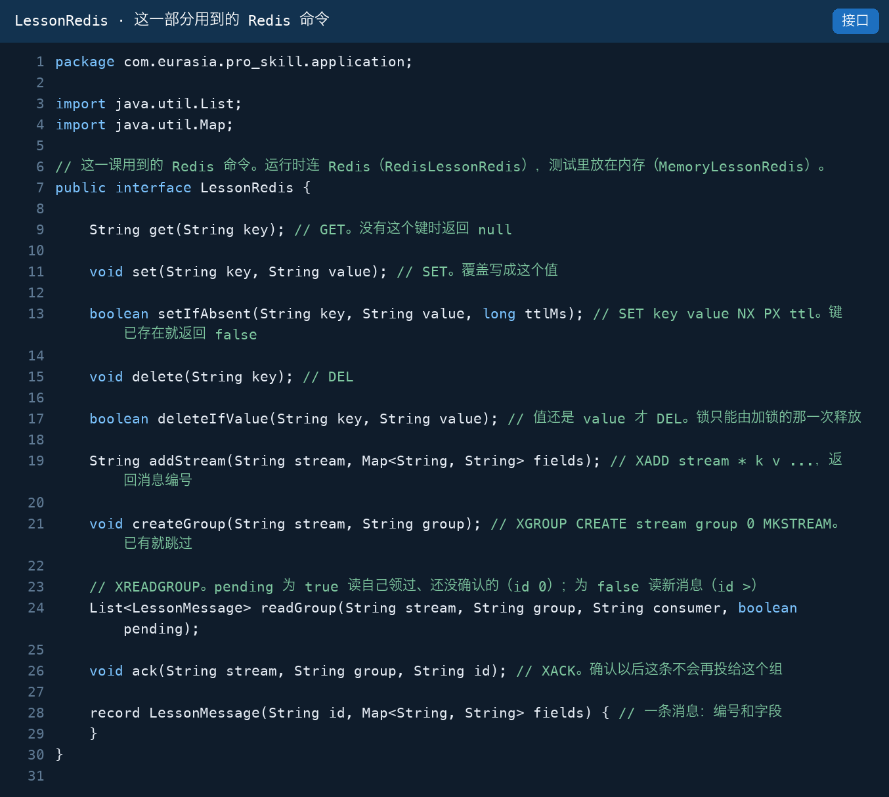
get、set、delete 是 GET、SET、DEL。setIfAbsent 是 SET key value NX PX 毫秒：键不存在才写，返回 true；已存在不写，返回 false。锁和防重都靠它。deleteIfValue 是值对得上才删。后四个是 Stream 的 XADD、XGROUP CREATE、XREADGROUP、XACK。运行时由 RedisLessonRedis 连真的 Redis；测试时由 MemoryLessonRedis 在内存里模拟，测试不用起 Redis。3. 一张新表
消费者每处理一条入库完成消息，就在 inbound_notice 写一行「到货通知」。真实项目里这一步可能是发短信、推给财务；课堂上写一行表，方便在 Adminer 里数它写了几次。
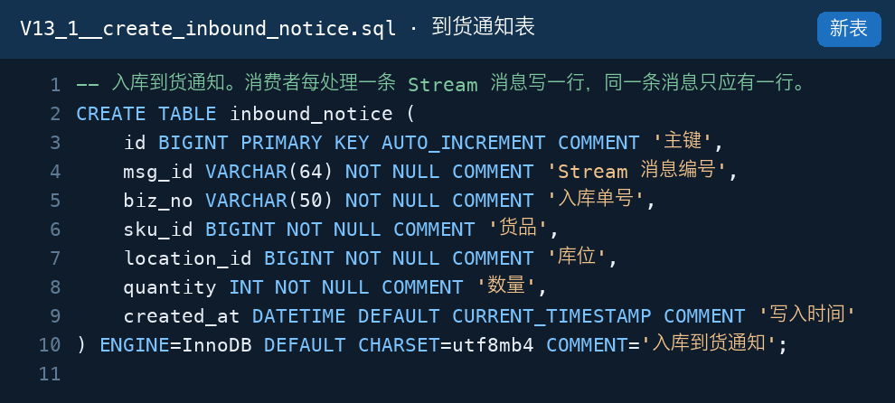
msg_id 是 Redis 给消息的编号，例如 1791741642633-0，同一条消息重投时编号不变。biz_no 是入库单号。sku_id、location_id、quantity 从消息里原样取出。这个脚本叫 V13_1，排在第二部分的 V13 之后。在不同部分的分支之间切换过的库，可能已经执行过更高版本的脚本，Flyway 默认会拒绝补执行低版本。所以 yaml 里打开了 out-of-order：
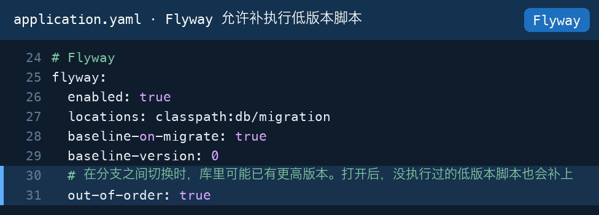
Migrating schema `pro_skill` to version "13.1 - create inbound notice" [out of order]，表照样建出来。4. 开关怎样起作用
和第二部分一样，一个开关的值走三步进到代码里：
app.lesson.cache-evict: off
@Value 读成 boolean
if (switches.cacheEvict())
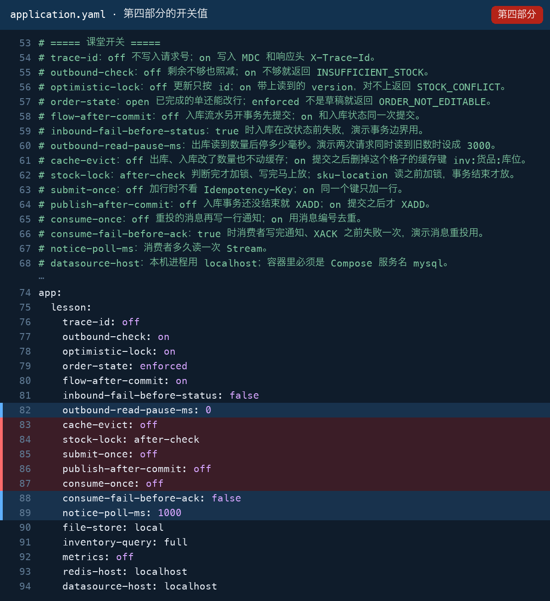
false。第 89 行是消费者多久读一次 Stream。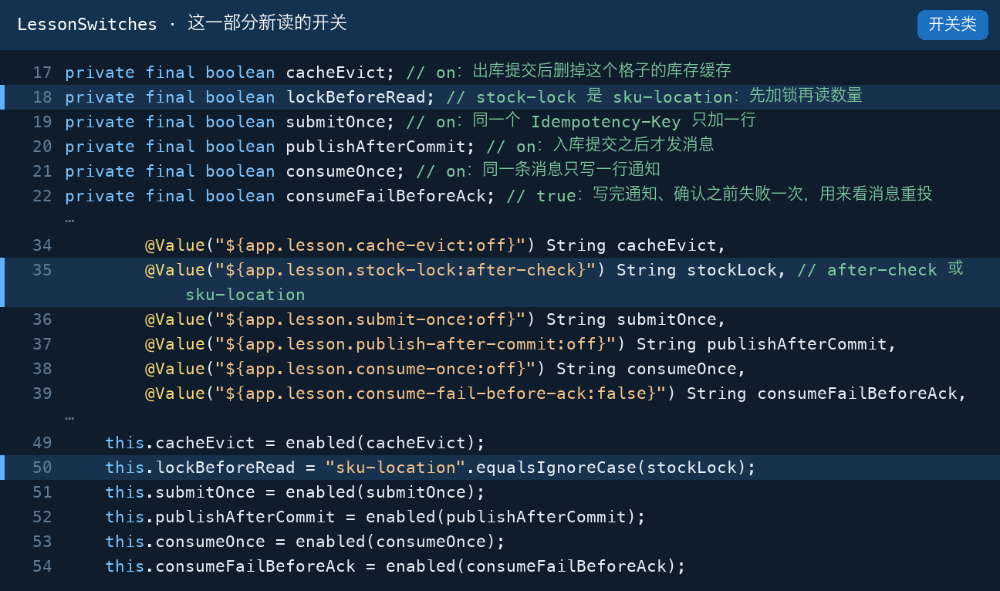
@Value 把 yaml 里的字符串取进来，冒号后面是没写时的默认值。第 50 行：stock-lock 不是开和关，是两种加锁位置，写成 sku-location 时 lockBeforeRead() 才是 true。改开关有三种办法，改完都要重启应用：改 application.yaml；java -jar 或 IDE 的 Program arguments 里加 --app.lesson.cache-evict=on；Compose 里用 APP_LESSON_CACHE_EVICT=on docker compose -f docker-compose.dev.yml up -d --build --force-recreate app。
改良版上的值
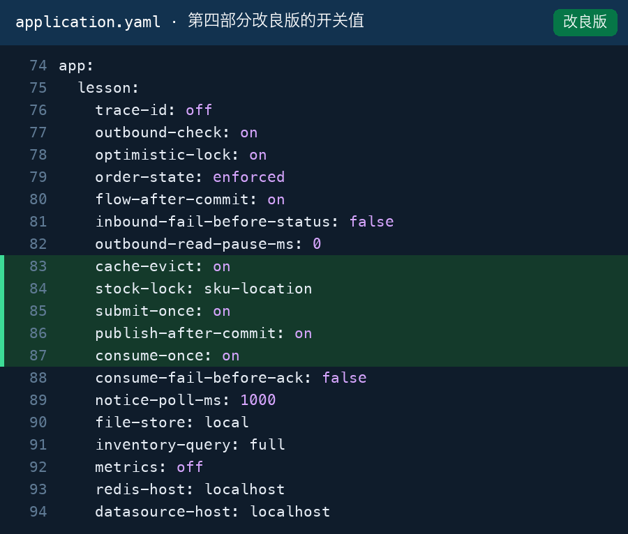
application.yaml，第 83–87 行是修好那一侧的值。其它行和第三部分相同。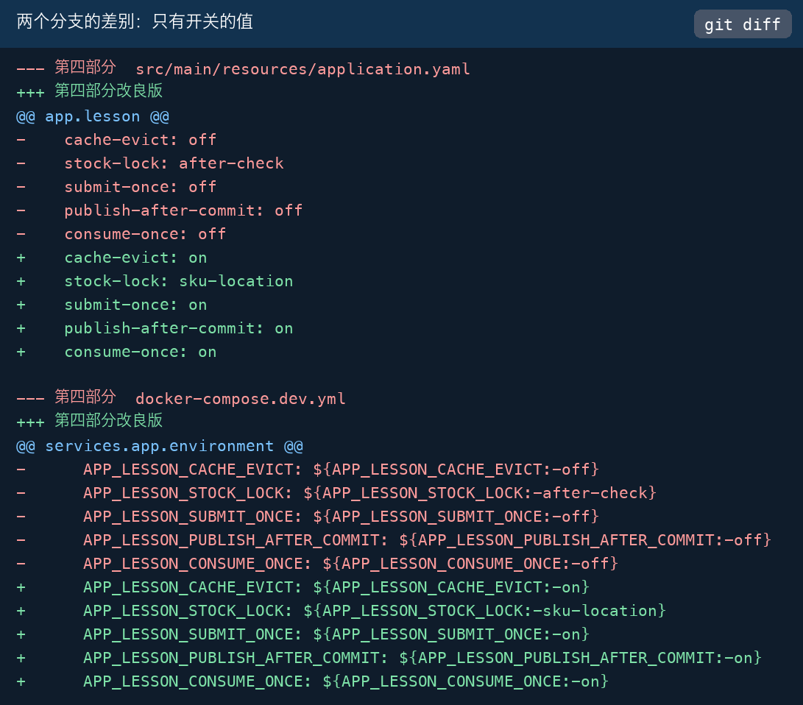
5. 接口一：查一个格子的库存
GET /inventories?skuId=1&locationId=1，没有请求体，两个主键写在问号后面。返回 {"skuId":1,"locationId":1,"quantity":10}。
| 值 | 从哪来 | 经过 | 落在 / 读自 |
|---|---|---|---|
skuId、locationId | 问号后的参数 | @RequestParam → quantity(skuId, locationId) → InventoryCache.key 拼成 inv:1:1 | Redis 键 inv:1:1 |
| 缓存的数量 | Redis | GET inv:1:1 → Integer.valueOf | 命中就直接返回，不查库 |
| 库里的数量 | inventory.quantity | 未命中时 getBySkuAndLocation 的 WHERE sku_id = ? AND location_id = ? | 读出后 SET inv:1:1 10 |
| 返回的三个字段 | Controller | Map.of("skuId", …, "locationId", …, "quantity", …) | 响应 JSON |
Controller
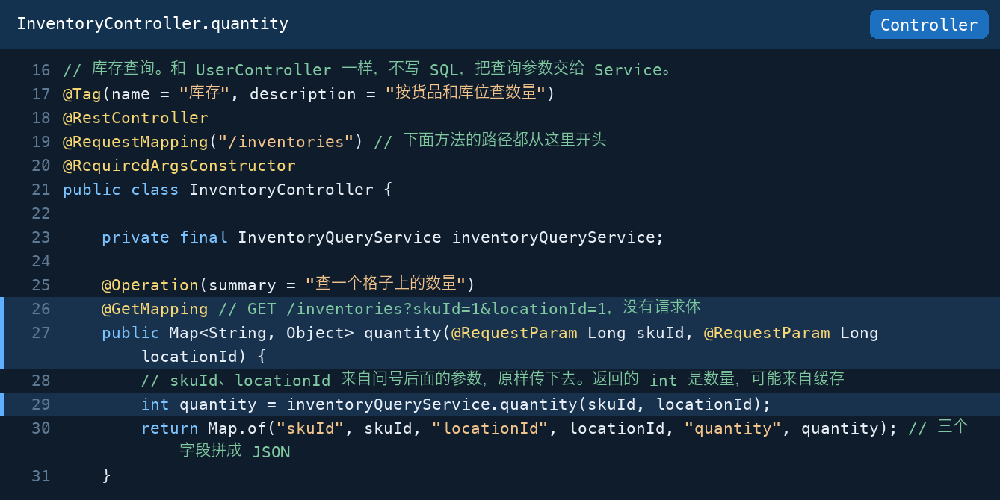
/inventories，第 26 行 @GetMapping 不带路径，就是 GET /inventories。第 27 行两个 @RequestParam 取问号后同名的参数。第 29 行原样交给 Service，拿回一个 int。第 30 行拼成三个字段返回。Service
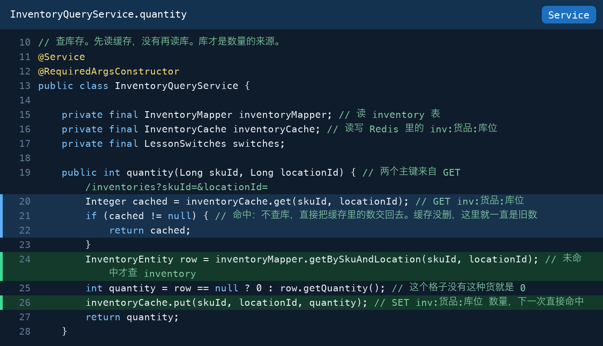
inventory。第 25 行这个格子没有这种货就是 0。第 26 行把读到的数写进缓存，下一次直接命中。这就是常说的「旁路缓存」：读的时候没有就补上。缓存的键和三个动作
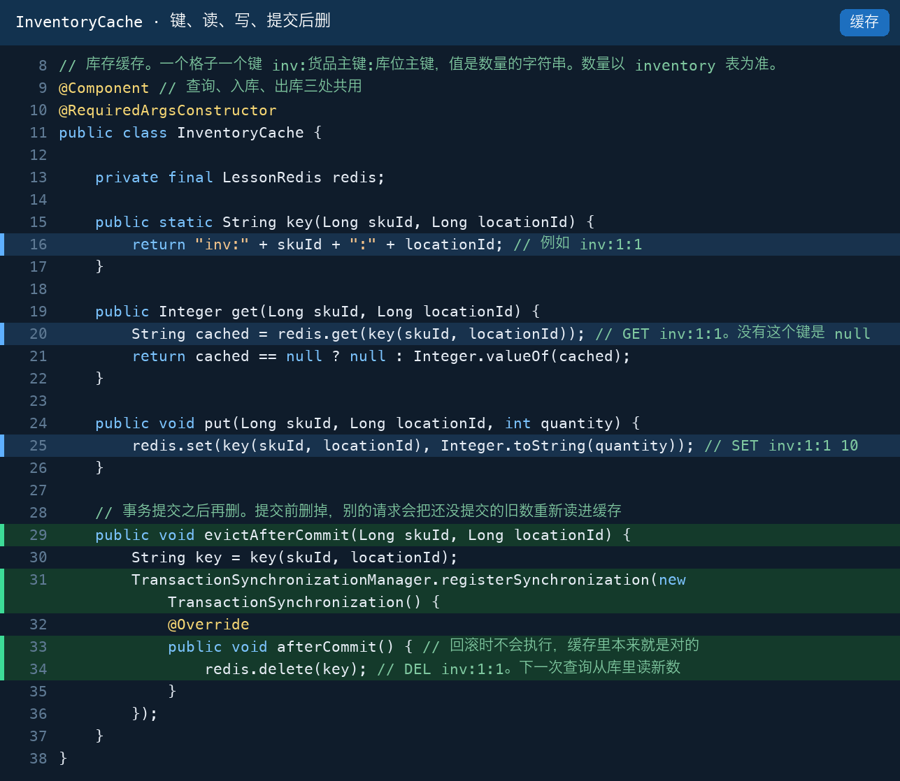
Mapper
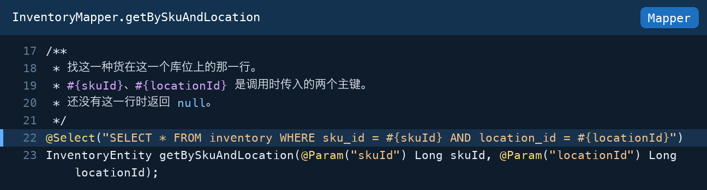
#{skuId}、#{locationId} 是第 23 行 @Param 起的名字。结果
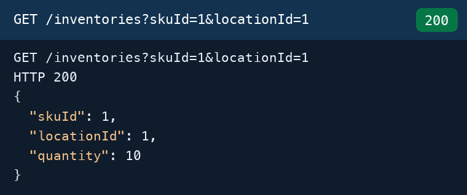
inv:1:1，值是 10。6. 接口二：加一行时带 Idempotency-Key
还是第二部分的 POST /outbound-orders/{id}/lines，请求体不变。网络慢时页面可能把同一次「加一行」发两遍，所以前端在每次操作时生成一个键，放在请求头里，重发时带同一个值：
curl -X POST http://localhost:8080/outbound-orders/4/lines \
-H "Authorization: Bearer 你的token" -H "Content-Type: application/json" \
-H "Idempotency-Key: line-001" \
-d '{"skuCode":"SKU-001","locationCode":"A-01-01","quantity":2}'
Postman 里在 Headers 页加一行，Key 写 Idempotency-Key，Value 写 line-001。
| 值 | 从哪来 | 经过 | 落在 |
|---|---|---|---|
Idempotency-Key | 请求头 | @RequestHeader → addLine(id, idempotencyKey, …) → 拼成 idem:outbound-line:line-001 | Redis 键，值是单号 OUT-4，一天后过期 |
id、三个 JSON 字段 | 路径和 JSON | 同第二部分 | outbound_order_line 的四列 |
Controller
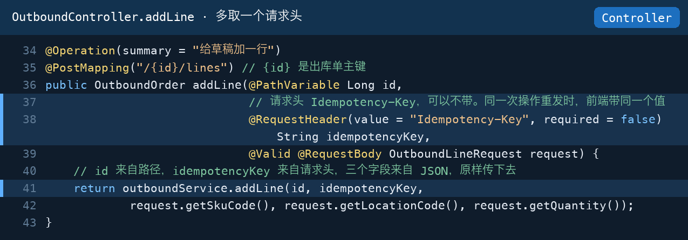
@RequestHeader(value = "Idempotency-Key", required = false) 取请求头，不带也能调用，这时是 null。第 41 行把它排在主键后面传给 Service。Service
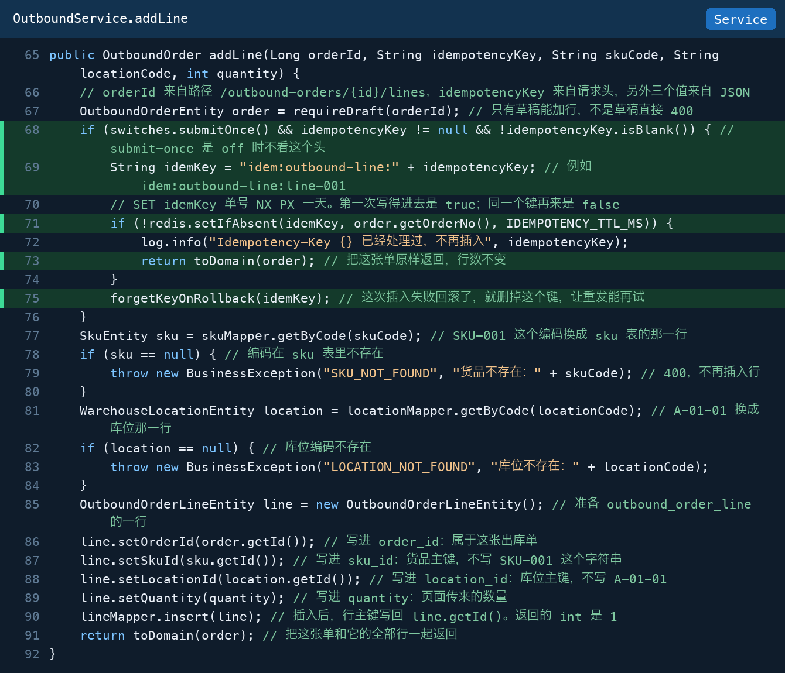
submit-once 打开、并且带了这个头，才走防重。第 69 行拼键。第 71 行 SET 键 OUT-4 NX PX 86400000：第一次写得进去，往下走到第 77–90 行插入；同一个键第二次来写不进去，第 72–73 行打一行日志，把这张单原样返回，不插入。第 75 行登记一件事：这次插入如果失败回滚，就把键删掉。第 77 行以下和第二部分相同。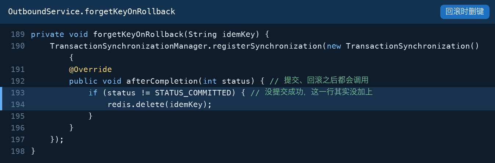
afterCompletion 在事务结束时调用，提交和回滚都会来。第 193–194 行：没提交成功，说明这一行其实没加上，删掉键，让用户重发时还能加。不删的话，一次失败以后这个键一天内都加不上。Mapper
插入行用的还是第二部分的 OutboundOrderLineMapper.insert，没有改动。
7. 接口三：完成出库前加锁
还是第二部分的 POST /outbound-orders/{id}/complete，路径上只有主键。第二部分用乐观锁保证了不会少减，代价是同时来的第二张单直接失败，库存够也失败。这一部分用 Redis 给每个格子一把锁：同一个格子同一时刻只有一张单在读和写，后来的等前一张做完再读。
| 值 | 从哪来 | 经过 | 落在 |
|---|---|---|---|
| 锁的键 | 出库行的 sku_id、location_id | StockLock.key 拼成 lock:inv:1:1 | Redis 键 |
| 锁的值 | 单号 + 随机串 | acquire 生成，例如 OUT-2:5f3c…，release 时带回来 | Redis 键的值，30 秒后过期 |
| 剩余、新数量 | inventory.quantity | 同第二部分：读、判断、updateQuantityIfVersion | inventory.quantity、version |
Service：先拿锁，再开事务
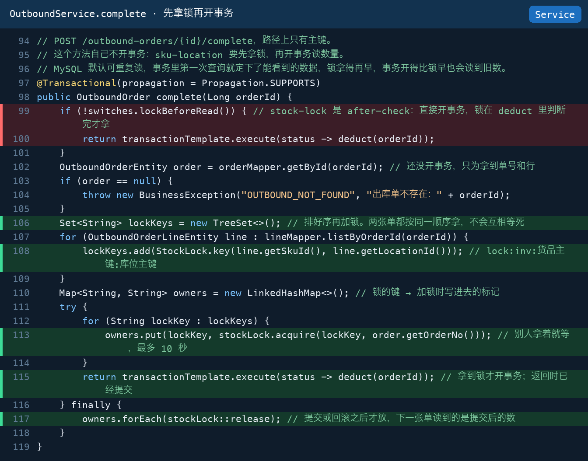
SUPPORTS：这个方法自己不开事务。第 99–100 行是漏洞那一侧，直接开事务进 deduct，锁在里面判断完才拿。第 102–109 行是修好那一侧：还没开事务，先查出这张单有哪些格子，放进排好序的集合。第 113 行逐个拿锁，别人拿着就等。第 115 行拿到全部锁才用 transactionTemplate 开事务，这一行返回时事务已经提交。第 117 行在 finally 里放锁，这时数据已经提交，下一张单读到的是新数。Service：读、判断、写
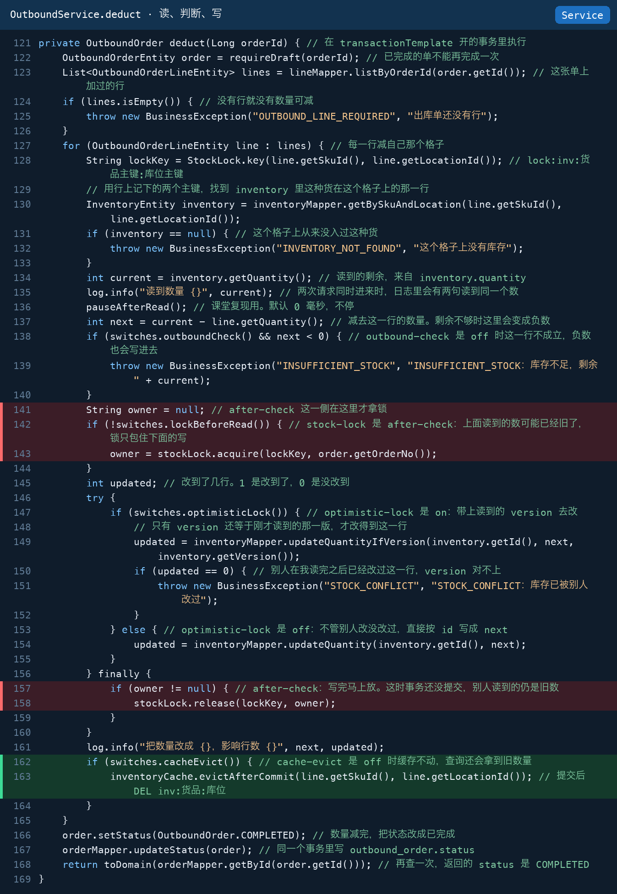
cache-evict 打开时，登记提交后删掉这个格子的缓存。锁本身
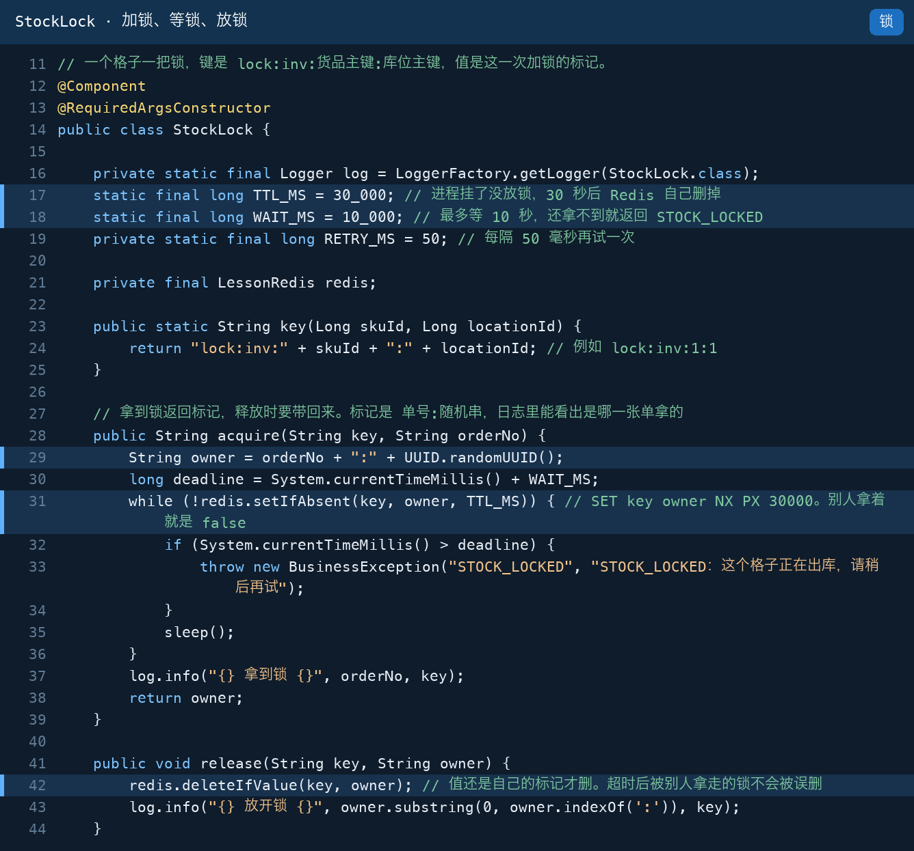
SET 键 值 NX PX 30000：拿到返回 true；别人拿着返回 false，第 35 行睡 50 毫秒再试。第 32–33 行等了 10 秒还拿不到，返回 STOCK_LOCKED。第 17 行：进程挂了没放锁，30 秒后 Redis 自己删掉这个键。第 42 行放锁时只删值还是自己的那个键。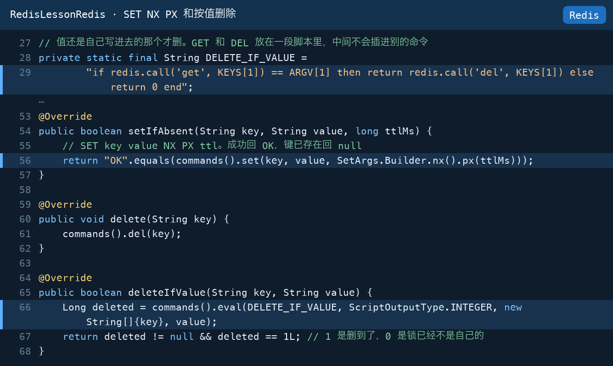
SET key value NX PX ttl，Redis 回 OK 表示写进去了。第 29 行是一段 Lua 脚本：值对得上才 DEL。GET 和 DEL 在 Redis 里一次执行完，中间插不进别的命令。如果分成两条命令，可能刚 GET 完锁就过期、被别人拿走，接着 DEL 删掉的是别人的锁。8. 入库完成发消息，消费者写通知
入库完成以后要做的事（通知、对账）不该让入库接口等着，所以入库只往 Stream 里放一条消息就返回，另一个线程每秒读一次，读到就写一行 inbound_notice。
XADD 四个字段
wms:inbound:completed
XREADGROUP
INSERT
这条处理完了
| 值 | 从哪来 | 经过 | 落在 |
|---|---|---|---|
orderNo | inbound_order.order_no | publishCompleted 放进消息 → 消费者 fields.get("orderNo") | inbound_notice.biz_no |
skuId、locationId、quantity | 入库行 | 转成字符串放进消息 → 消费者转回 Long、Integer | inbound_notice 同名三列 |
| 消息编号 | Redis 在 XADD 时生成 | message.id() | inbound_notice.msg_id，以及去重键 inbound:consumed:编号 |
发消息：InboundService
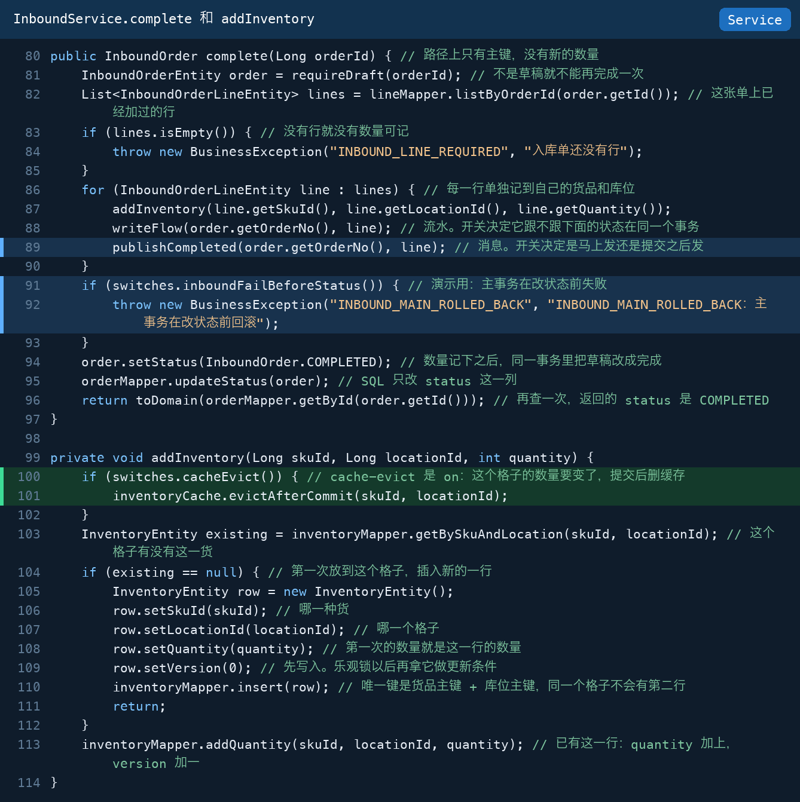
publishCompleted 发一条消息。第 91–92 行是第二部分的演示开关，打开时在改状态之前失败，整个事务回滚。第 100–101 行：入库也改了数量，cache-evict 打开时同样登记提交后删缓存。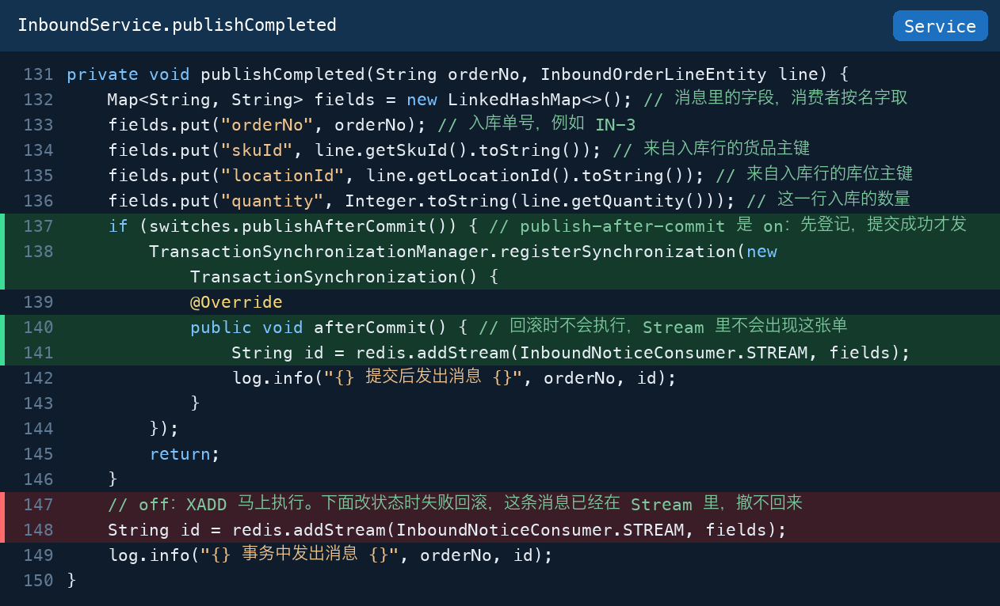
afterCommit 只在事务提交成功后执行，这时才 XADD。第 147–149 行是漏洞那一侧：马上 XADD，事务还没结束消息就已经在 Stream 里。读消息：消费者
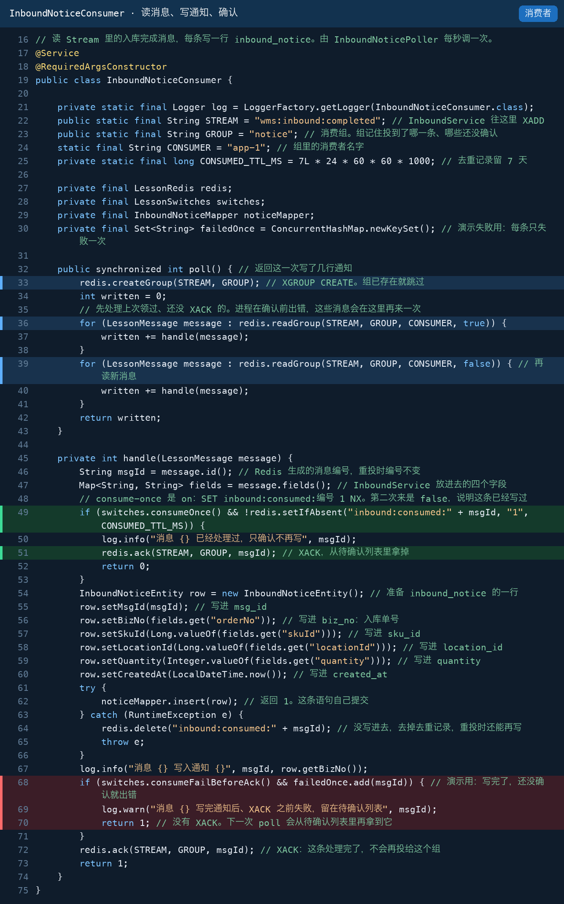
inbound_notice。第 68–70 行是演示开关：写完、确认之前失败一次。第 72 行 XACK，这条从待确认里拿掉。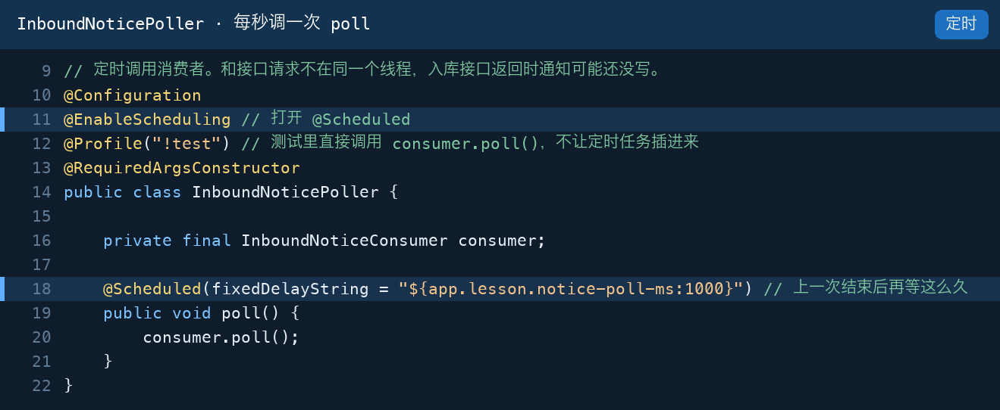
@Scheduled 每次结束后等 notice-poll-ms 毫秒再调一次 poll。它跑在 scheduling-1 线程上，和处理请求的 http-nio-… 线程分开，日志里一眼能分出来。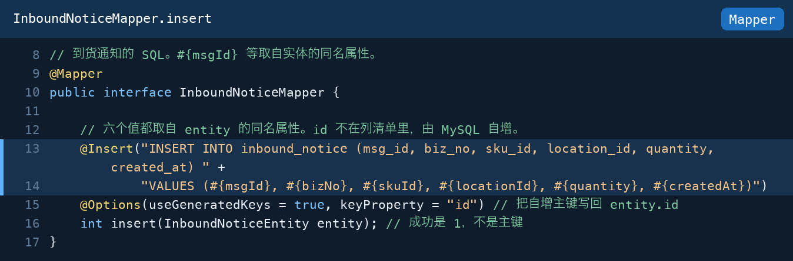
#{} 取 entity 上的同名属性，id 由 MySQL 自增，第 15 行写回 entity.id。返回的 int 是 1。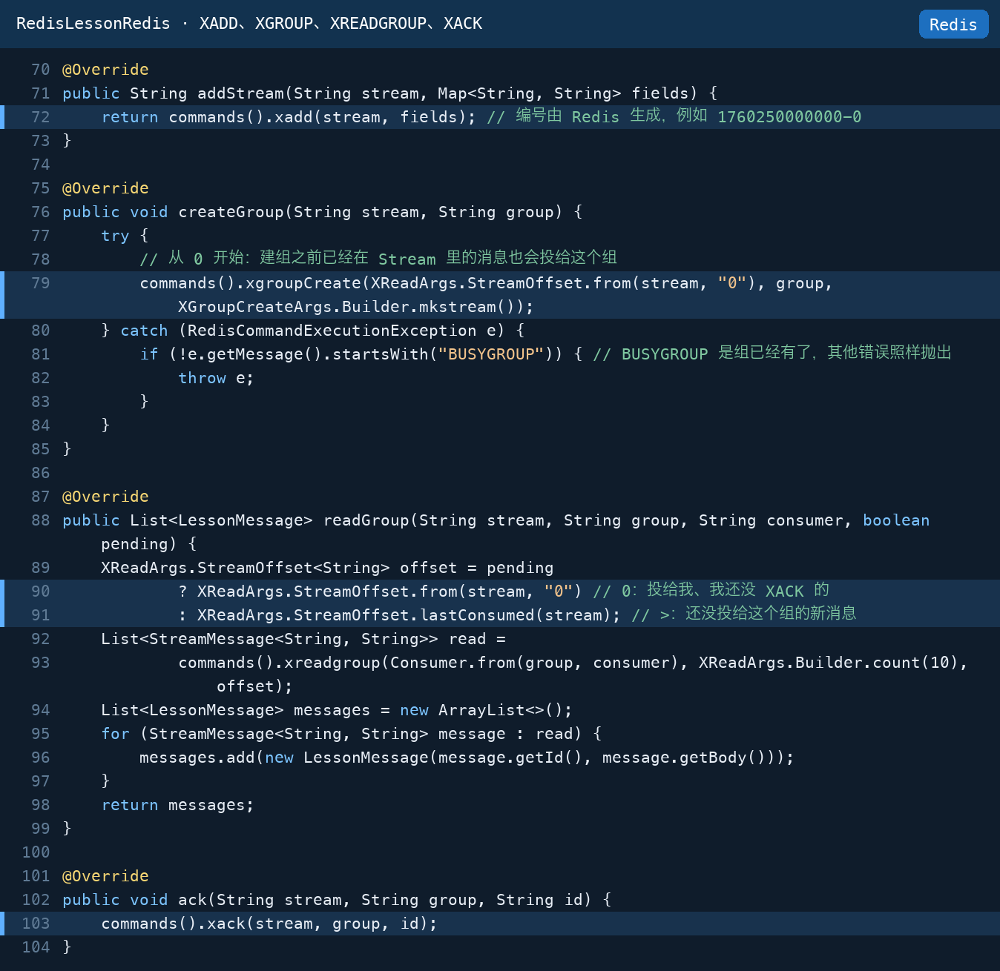
XGROUP CREATE … 0 MKSTREAM：从第一条开始投，Stream 还不存在就建出来。第 90 行读待确认的用 0，第 91 行读新消息用 >。第 103 行 XACK。9. 实验顺序
下面的结果都是按这个顺序在两个分支上各跑一遍得到的。想让主键和图上一样，先在 Adminer（http://localhost:8081，库 pro_skill）的「SQL命令」里清空这几张表，再在 redis-cli 里 FLUSHALL：
TRUNCATE TABLE inbound_notice; TRUNCATE TABLE stock_flow; TRUNCATE TABLE outbound_order_line; TRUNCATE TABLE outbound_order; TRUNCATE TABLE inbound_order_line; TRUNCATE TABLE inbound_order; TRUNCATE TABLE inventory;
启动时加两个演示参数，两个分支都一样：
--app.lesson.outbound-read-pause-ms=3000 --app.lesson.consume-fail-before-ack=true
每个请求都要带登录拿到的 token。货品 SKU-001 主键是 1，库位 A-01-01 主键是 1。
| 步 | 请求 | 第三部分 | 改良版 |
|---|---|---|---|
| 1 | 入库 IN-1：POST /inbound-orders；POST /inbound-orders/1/lines {"skuCode":"SKU-001","locationCode":"A-01-01","quantity":10}；POST /inbound-orders/1/complete | 库存 10；inbound_notice 两行 | 库存 10；inbound_notice 一行 |
| 2 | GET /inventories?skuId=1&locationId=1 | 两边一样：10，Redis 里有 inv:1:1 | |
| 3 | OUT-1 出 3：新建；加一行 quantity 3；完成。然后再查一次第 2 步 | 出库 200，再查还是 10 | 出库 200，再查是 7 |
| 4 | OUT-2、OUT-3 各出 1：两张都新建、加行；然后 3 秒内先后发两张的 complete | OUT-2 200，OUT-3 400 STOCK_CONFLICT，库存 6 | 两张都 200，库存 5 |
| 5 | OUT-4：新建；带 Idempotency-Key: line-001 加一行 quantity 2，同样的请求再发一次 | 两次 200，单上两行 | 两次 200，单上一行 |
| 6 | 再加 --app.lesson.inbound-fail-before-status=true 重启。入库 IN-2：新建；加一行 quantity 5；完成 | 400，IN-2 是草稿，inbound_notice 里有 IN-2 | 400，IN-2 是草稿，inbound_notice 里没有 IN-2 |
做完把三个演示参数去掉再启动。
10. 漏洞一：出库后查询还是旧数
漏洞是什么
缓存是数据库的一份副本。数据库改了、副本不动，查询命中缓存就一直返回旧数。cache-evict 是 off 时，出库和入库改了 inventory 都不碰缓存。第 5 节 Service 第 21–22 行一命中就返回，旧数会一直留在那里，直到 Redis 重启或者有人手动删键。用户看到还有 10 件，下单出 10 件，完成时才发现只剩 7。
复现：实验顺序第 2、3 步
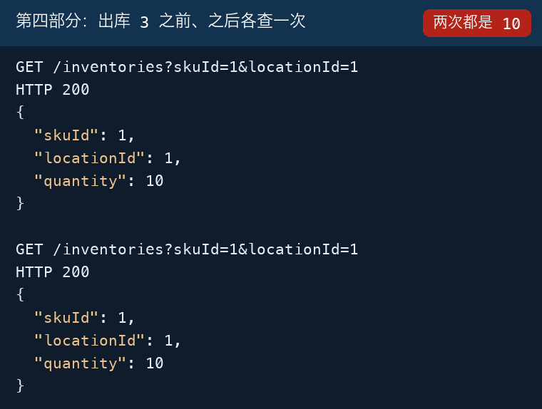
去 Redis 和库里查
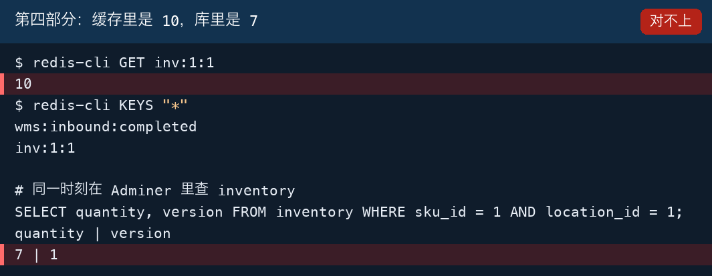
GET inv:1:1 是 10。Adminer 里同一个格子是 7，version 是 1，出库确实减了。数据库对，缓存错，查询读的是缓存。是哪一行代码
第 7 节 deduct 第 162 行：cache-evict 是 off，第 163 行不执行，事务提交了，inv:1:1 没人删。
改良版怎么改：提交之后删缓存
改良版把 cache-evict 设成 on。出库（deduct 第 163 行）和入库（addInventory 第 101 行）改数量时，都登记一件「提交后删掉这个格子的键」的事（第 5 节 InventoryCache 第 29–36 行）。下一次查询未命中，从库里读新数再写回缓存。
为什么删而不是改成新数：两个请求先后改同一个格子，写缓存的顺序可能和提交的顺序相反，缓存里留下的反而是旧的那个。删掉就没有这个问题，谁来查谁从库里读。
为什么等提交以后才删：提交之前删，另一个查询这时进来，未命中去读库，读到的是还没提交的旧数 10，又写回缓存。提交以后才删，库里已经是 7。
改完的结果
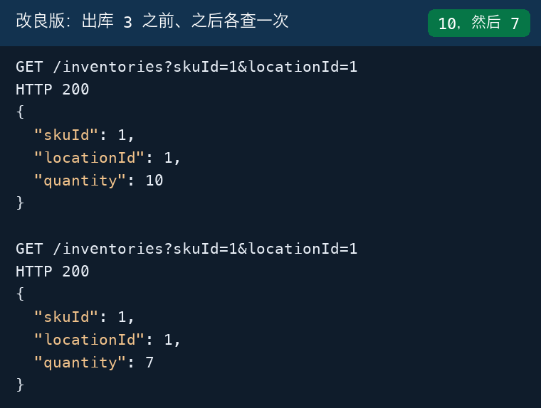
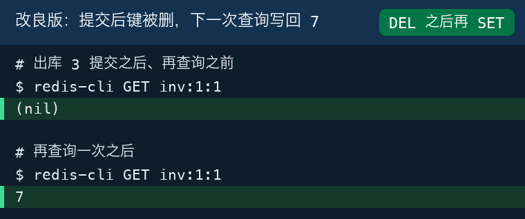
GET inv:1:1 是 (nil)，键已经被删。再查询一次，Service 从库里读到 7 写回缓存，GET 是 7。11. 漏洞二：锁加了，库存够的单照样失败
漏洞是什么
锁要保护的是「读剩余 → 判断够不够 → 写回」这一整段。stock-lock 是 after-check 时，锁在判断之后才拿（第 7 节 deduct 第 141–144 行）。两张单都已经各自读到 7，锁只让它们一前一后写。第二张写的时候带着旧的 version，乐观锁拦下它，返回 STOCK_CONFLICT。剩 7 件出 1 件，库存明明够，用户却被告知冲突。锁在这里什么也没保护。
复现：实验顺序第 4 步
停顿 3000 毫秒是为了让两次请求同时停在「读完、还没写」的地方。OUT-2、OUT-3 都加好行以后，开两个终端各粘一条，3 秒内先后回车：
curl -X POST http://localhost:8080/outbound-orders/2/complete -H "Authorization: Bearer 你的token" curl -X POST http://localhost:8080/outbound-orders/3/complete -H "Authorization: Bearer 你的token"
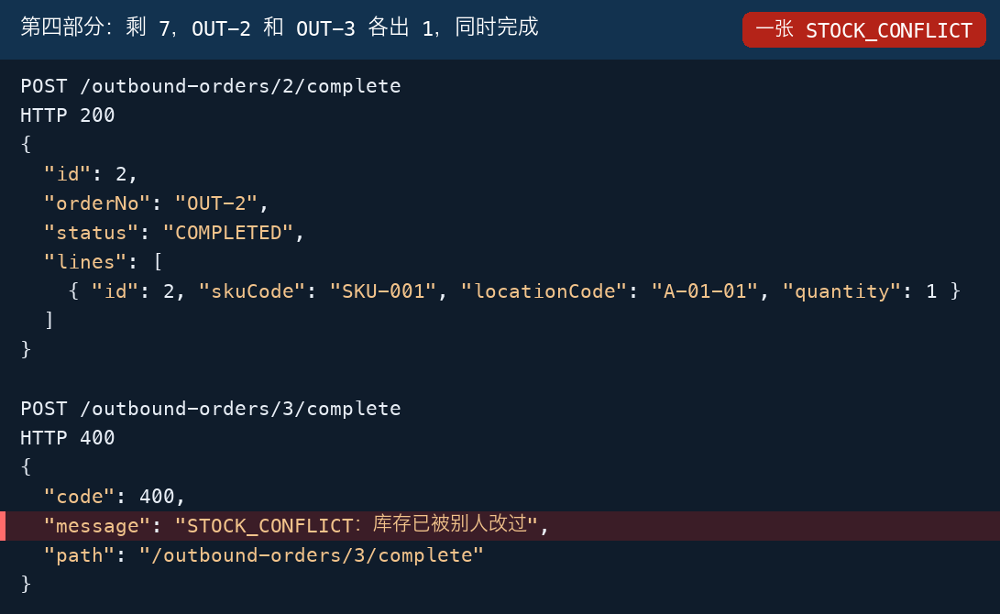
STOCK_CONFLICT。去日志和库里查
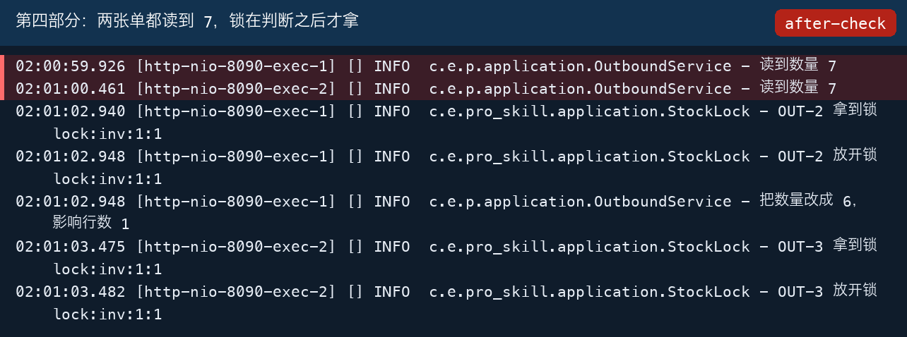
SELECT id, sku_id, location_id, quantity, version FROM inventory; SELECT id, order_no, status FROM outbound_order;
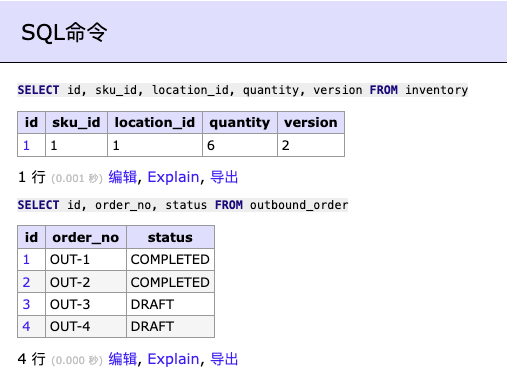
是哪一行代码
第 7 节 complete 第 99–100 行直接开事务；deduct 第 134 行先读，第 143 行才拿锁，第 158 行写完马上放锁。
改良版怎么改：读之前拿锁，而且在事务外面拿
改良版把 stock-lock 设成 sku-location，走 complete 第 102–117 行：先拿这张单所有格子的锁，再开事务读数量，事务提交以后才放锁。
只把加锁挪到读之前还不够，锁必须拿在事务外面。下面这份日志是锁挪到了 deduct 开头、但仍在事务里面时跑出来的：
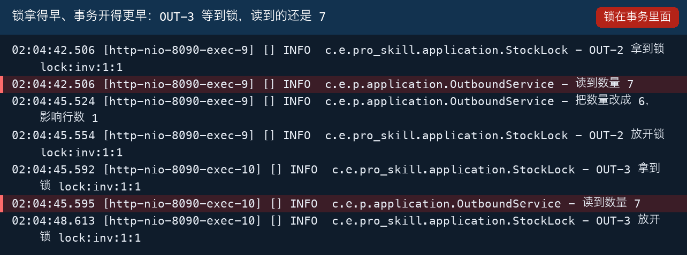
原因在 MySQL 的隔离级别。MySQL 默认是「可重复读」：一个事务里第一次查询时，就定下了这个事务能看到的数据，之后别人提交的改动它都看不见。OUT-3 的事务在等锁之前已经开始、已经查过出库单，所以它等到锁以后读 inventory，看到的还是 OUT-2 提交前的 7。锁拿在事务外面，OUT-3 拿到锁时 OUT-2 已经提交，它这时才开事务，第一次查询就能看到 6。这就是第 97 行写 SUPPORTS、第 115 行用 transactionTemplate 自己开事务的原因。
另外两处细节：第 106 行用排好序的集合，两张单如果都涉及格子甲和格子乙，都按同一个顺序拿锁，不会一个拿着甲等乙、一个拿着乙等甲。第 117 行放锁用的是加锁时的值，30 秒过期后被别人拿走的锁不会被误删。
改完的结果
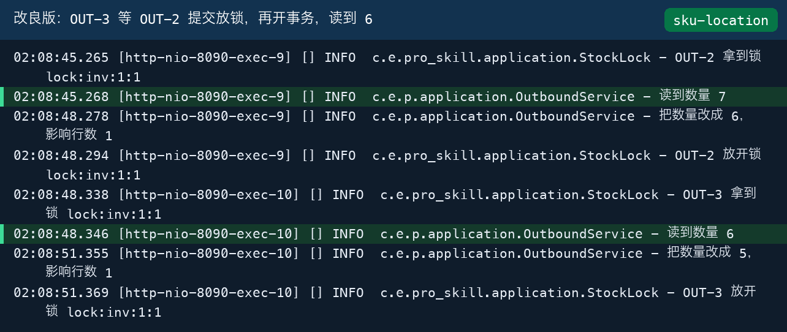
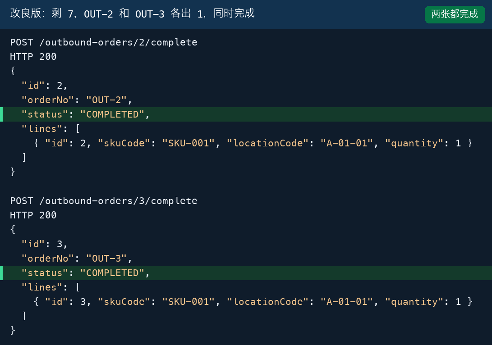
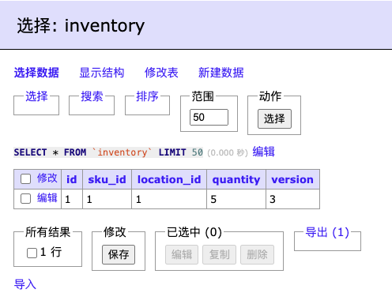
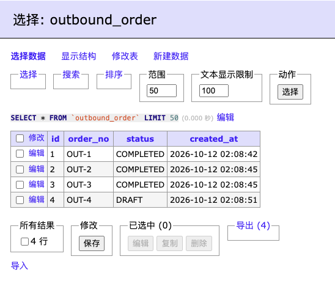
COMPLETED，OUT-4 是下一步要用的草稿。乐观锁还留着。Redis 锁 30 秒过期以后，万一两张单又同时写，version 仍会拦下后一张。Redis 锁让大多数请求排队成功，乐观锁兜底保证不少减。
12. 漏洞三：同一个请求重发，加了两行
漏洞是什么
用户点一次「加一行」，网络超时，页面自动重发；或者用户连点了两下。服务器收到两个一模一样的请求，submit-once 是 off 时每次都插入一行。出库单上本来是出 2 件，变成两行共 4 件，完成时就多减 2 件。
复现：实验顺序第 5 步
按第 6 节的 curl 发两次，请求头都是 Idempotency-Key: line-001。
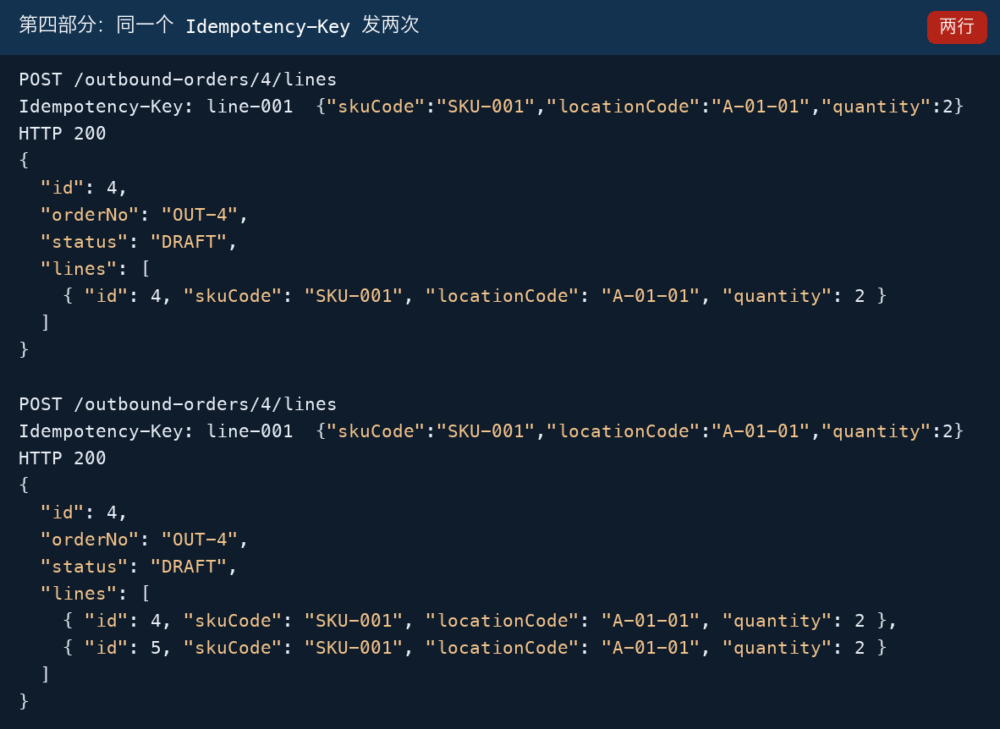
去库里查
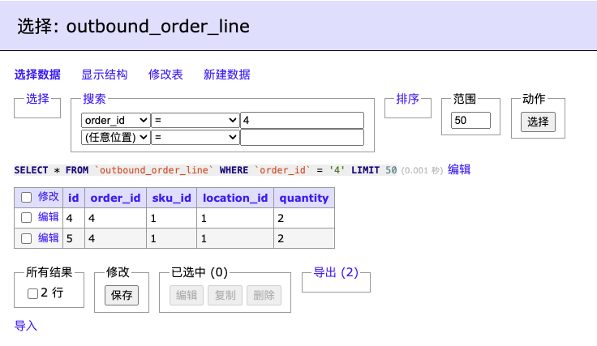
outbound_order_line，搜索 order_id = 4：两行。redis-cli 里没有 idem: 开头的键，请求头根本没被用上。是哪一行代码
第 6 节 addLine 第 68 行：submit-once 是 off，整段跳过，直接到第 90 行插入。
改良版怎么改：同一个键只放行一次
改良版把 submit-once 设成 on。第 71 行用 SET NX 占住这个键，只有第一个请求占得到。为什么不先 GET 看有没有、再 SET：两个请求同时 GET，都看到没有，都往下插入。SET NX 是一条命令，Redis 一次只执行一条，只有一个能写进去。
改完的结果
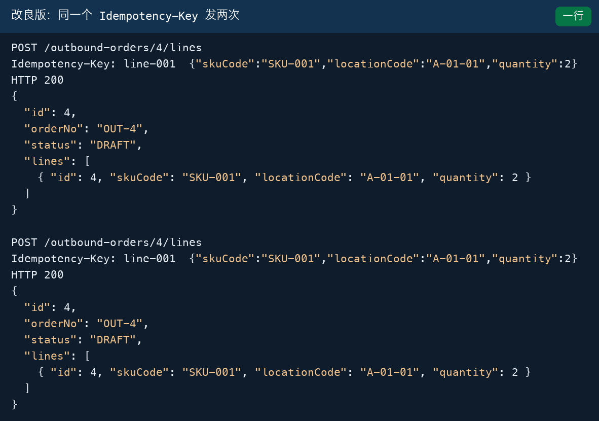
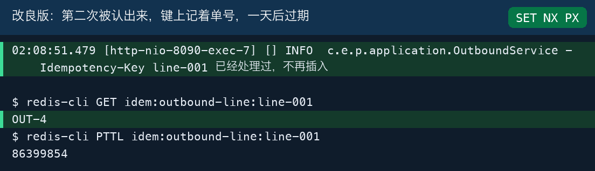
OUT-4，PTTL 约 86400000 毫秒，也就是一天后过期。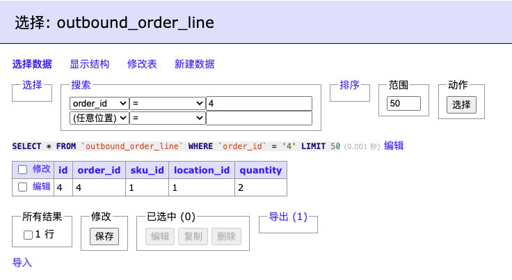
order_id = 4 只有一行。13. 漏洞四：入库回滚了，通知照样发出
漏洞是什么
和第二部分的流水是同一类问题：Redis 不参与 MySQL 的事务。publish-after-commit 是 off 时，XADD 在事务中间就执行了。后面改状态失败，MySQL 把库存、单据都撤回，Stream 里的消息撤不回来。消费者照样读到，写了一行「IN-2 到货 5 件」，可这 5 件并没有入库。
复现：实验顺序第 6 步
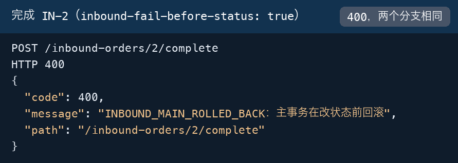
inbound_notice 里。去日志、Redis 和库里查
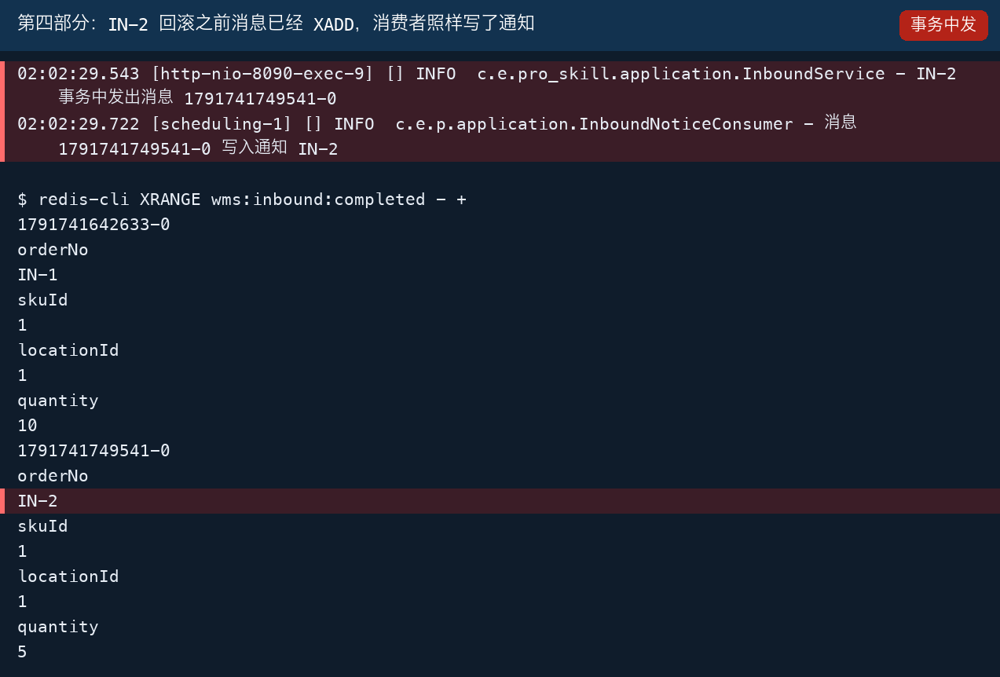
XRANGE 里有两条消息，第二条是 IN-2、数量 5。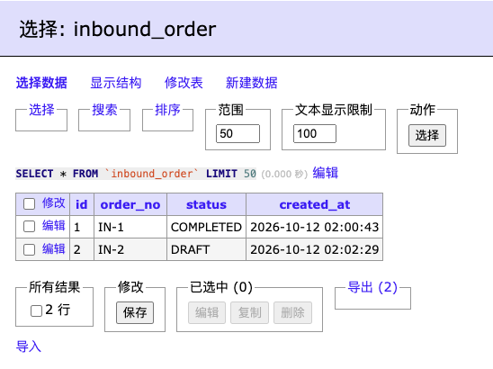
inbound_order 里 IN-2 是 DRAFT，入库没有完成。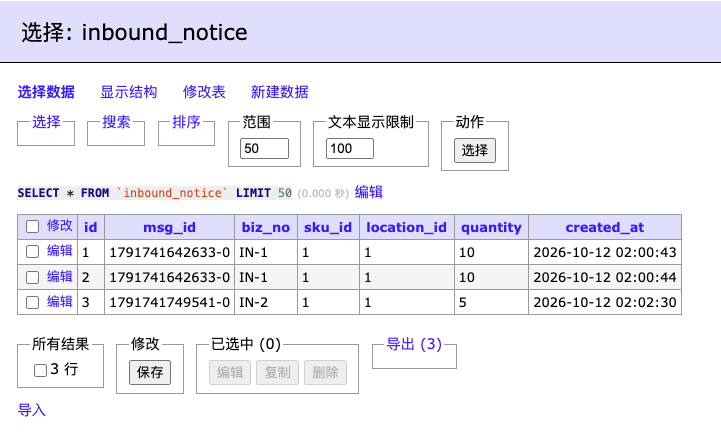
inbound_notice 里却有 IN-2 这一行。是哪一行代码
第 8 节 publishCompleted 第 148 行：开关是 off，马上 XADD。
改良版怎么改：提交之后再发
改良版把 publish-after-commit 设成 on，走第 137–145 行。XADD 放进 afterCommit，事务回滚时 Spring 不会调用它。
这样换来一个新的小风险：事务提交了，进程正好在 XADD 之前挂掉，这条消息就丢了。课堂上接受这个风险；要求更高时的做法是在同一个事务里先把消息写进一张表，再由定时任务把表里的消息搬到 Stream。
改完的结果
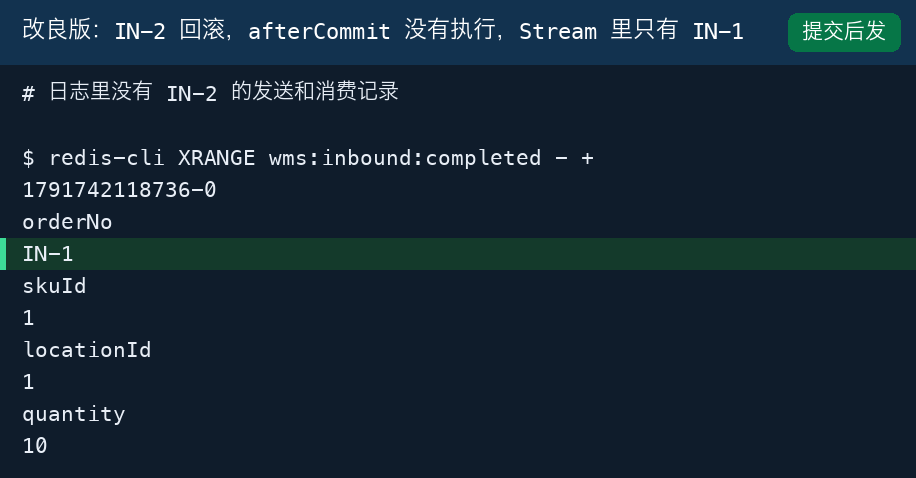
XRANGE 里只有 IN-1 一条。DRAFT。inbound_notice 只有 IN-1。单据、库存、通知三处一致。14. 漏洞五：消息重投，通知写了两行
漏洞是什么
消费者先写通知，再 XACK。两步之间出错（进程被杀、网络断开），这条消息留在消费组的待确认列表里，下一次读待确认时会再来一次。这是 Stream 有意这样设计的：宁可多投一次，也不丢。所以消费者必须能接受同一条消息来两次。consume-once 是 off 时，第二次照样插入，通知多一行；如果这一步是发短信，用户就收到两条。
复现：实验顺序第 1 步
consume-fail-before-ack=true 让每条消息第一次写完通知以后、XACK 之前失败一次（第 8 节消费者第 68–70 行），模拟这一类出错。
去日志、Redis 和库里查
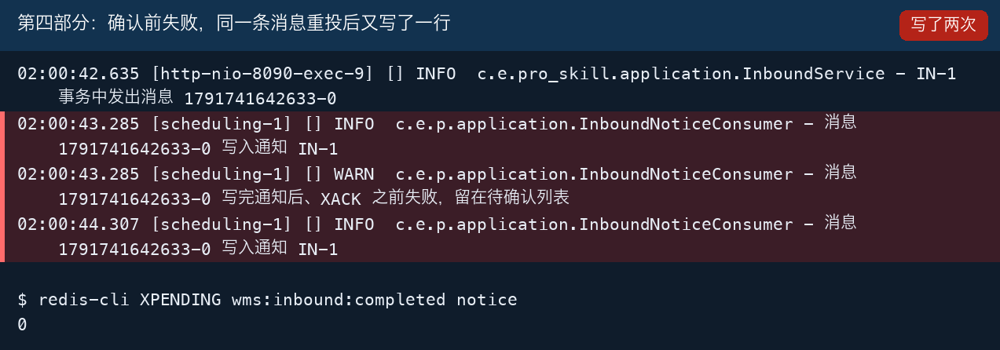
1791741642633-0：第一次写入通知，接着 WARN「XACK 之前失败」；1 秒后下一轮 poll 从待确认里再拿到它，又写入一次。第二次成功确认，XPENDING 是 0。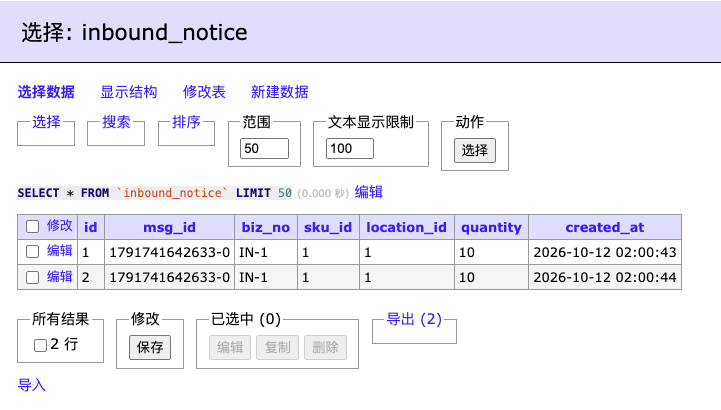
inbound_notice 两行，msg_id 相同，created_at 差 1 秒。是哪一行代码
第 8 节消费者第 49 行：consume-once 是 off，不查是否处理过，直接到第 62 行插入。
改良版怎么改：按消息编号去重
改良版把 consume-once 设成 on。第 49 行用 SET inbound:consumed:编号 1 NX 占住这条消息：第一次占得到，往下写；重投时占不到，第 50–52 行只 XACK，不再写。第 64 行：如果插入本身失败，删掉这个键，重投时还能再写，不会因为去重把消息吃掉。
改完的结果
XPENDING 是 0，Redis 里有去重键 inbound:consumed:1791742118736-0。inbound_notice 只有一行。15. 改良版改了哪五块
两个分支的 Java 代码相同。改良版改的是 application.yaml 和 docker-compose.dev.yml 里五个开关的默认值（第 4 节的差别图），改完以后同一个请求走修好的那几行。
| 开关 | 第三部分 | 改良版 | 改良版走的代码 | 同一操作的结果 |
|---|---|---|---|---|
cache-evict | off | on | OutboundService 第 162–163 行、InboundService 第 100–101 行：提交后 DEL | 出库后再查：10 变成 7 |
stock-lock | after-check | sku-location | OutboundService 第 102–117 行：事务外先拿锁，提交后放 | 同时出库：一张 STOCK_CONFLICT 变成两张都完成 |
submit-once | off | on | OutboundService 第 68–76 行：SET NX 占住请求头的值 | 同一个键加两次：两行变成一行 |
publish-after-commit | off | on | InboundService 第 137–145 行：afterCommit 里 XADD | 入库回滚：有通知变成没有通知 |
consume-once | off | on | InboundNoticeConsumer 第 49–53 行：按消息编号 SET NX | 消息重投：两行通知变成一行 |
不带请求头的加行、单独一张单的完成出库、正常的入库，两个分支结果相同。
16. 用测试把两条路径跑一遍
两个测试类把开关写死，在哪个分支上跑结果都一样。测试用 MemoryLessonRedis 代替真的 Redis，不用起容器：
| 测试类 | 开关 | 断言 |
|---|---|---|
RedisDefectPathTest | 五个开关都是漏洞那一侧 | 出库后缓存还是 10、库里 7；同时出库一张 STOCK_CONFLICT、库存 2；同一个键加出两行；入库回滚后仍有通知；重投写两行 |
RedisFixedPathTest | 五个开关都是修好那一侧 | 出库后查询是 7；同时出库两张都完成、库存 0；回滚后锁已放开；同一个键只有一行；回滚后没有通知；重投只写一行 |
./mvnw test -Dtest='Redis*PathTest'
测试用的 H2 数据库在可重复读下是按行定快照的，第 11 节「锁在事务里面」那个问题在 H2 上测不出来，只能在 MySQL 上按实验顺序第 4 步看日志确认。这是测试数据库和生产数据库不一致时常见的盲区。
17. 把改良版合并进第三部分
仓库地址仍是 https://gitee.com/dingsaier/warehouse-backend.git。源分支是 第三部分改良版，目标分支是 第三部分。讲义两边是同一份，合并带过去的是第 4 节差别图里的开关值。操作和第一部分最后一节相同，教师做，全班看，只合并这一次。
- GitHub Desktop 里点 Fetch origin，Current Branch 选「第三部分改良版」。
- 上方是 Push origin 时点它，把改良版送到 Gitee。
- 浏览器打开仓库，「Pull Requests」→「新建 Pull Request」，源分支
第三部分改良版，目标分支第三部分，标题「合入第三部分改良版」，点「创建」。文件列表里能看到application.yaml和docker-compose.dev.yml。 - 在这个 Pull Request 页面点「合并」并确认。
- GitHub Desktop 切回「第三部分」，点 Pull origin。
application.yaml 第 83–87 行变成 on、sku-location、on、on、on。清空表和 Redis，重启后按实验顺序再跑一遍，结果和这份讲义里的改良版一致。18. 作业里要写同类接口时
把下面这段发给 DeepSeek 或 Kimi。生成后按第 5–8 节的顺序检查：缓存是不是提交后删而不是改；锁是不是在事务外面拿、提交后放；放锁是不是按值删；防重和去重是不是用 SET NX 而不是先 GET 再 SET；消息是不是提交后才发。
这是 Spring Boot 项目，包名 com.eurasia.pro_skill，MyBatis 注解写 SQL，Redis 用 Lettuce。 请按 UserController 的方式写：Controller 把路径变量、请求参数、请求头一个个传给 Service，不要用 builder。 1. 查库存 GET /inventories?skuId=&locationId=：先 GET inv:货品:库位，没有再查 inventory，查到后 SET。 入库、出库改数量时，在事务提交之后 DEL 这个键（TransactionSynchronization.afterCommit）。 2. 加出库行时读请求头 Idempotency-Key，用 SET idem:键 单号 NX PX 一天，写不进去就原样返回不插入； 事务回滚时删掉这个键。 3. 完成出库：方法本身不开事务。先按行拼 lock:inv:货品:库位，排序后逐个 SET NX PX 30000 拿锁， 拿到后用 TransactionTemplate 开事务读、判断、带 version 更新；finally 里用 Lua 脚本按值删锁。 4. 入库完成后在 afterCommit 里 XADD 到 Stream，字段 orderNo、skuId、locationId、quantity。 消费者用 XREADGROUP 先读待确认再读新消息，按消息编号 SET NX 去重，写一行表后 XACK。 每一行代码加注释：这个值从哪来、写到哪个 Redis 键或哪一列、返回的是什么。 生成后说明：MySQL 可重复读下，锁为什么不能在事务里面拿。